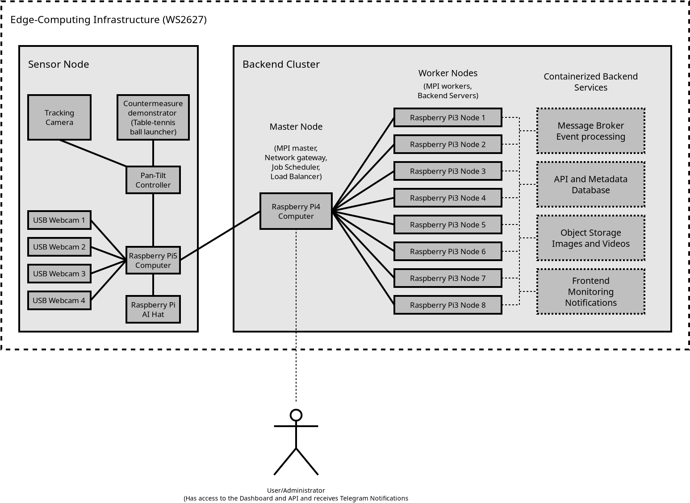

Cloud Computing (WS2627)
This master's-level course applies the fundamentals of distributed systems,
edge computing,
cloud computing, and artificial intelligence in practice. Groups of students
combine hardware and software components to develop a complex distributed
system. The goal of the semester project is
to develop an edge computing system that detects, identifies, and tracks
drones using multiple cameras. Each group will design, build, test,
document, and present a complete prototype consisting of an edge-based sensor
node and a distributed backend cluster. The sensor node will use several
stationary cameras to monitor a large section of the sky. When a possible
drone is detected, the system will classify the object and track its movement.
The backend infrastructure consists of a cluster system that receives events,
images, video clips, status information, and monitoring data from the sensor
node. The backend provides persistent storage, an API, a web-based dashboard,
monitoring, and notification services.
This course has no written exam. Instead, your individual grade will depend
entirely on your work and the results of the semester project.
The project includes the following tasks:
-
Task 1: Sensor Node and Camera Infrastructure.
Develop and set up an edge sensor node that includes several stationary
overview cameras (USB webcams or CSI-connected cameras) and provides local
buffering of images and events. The students must investigate, among other
things, the effects of image resolution, frame rate, field of view, exposure
settings, USB bandwidth, power consumption, and processing load. The system
does not need to monitor the entire sky. Instead, the group must define and
document a realistic horizontal and vertical observation area.
-
Task 2: Drone Detection and Classification.
Collect and annotate a representative dataset and train an object-detection
model using, for example,
TensorFlow,
OpenCV, or
YOLO. The model may be
trained using the group's own hardware, in which case a supported GPU is
required, or a cloud service such as
Roboflow or
V7. The model must recognize drones
and distinguish them from birds, airplanes, helicopters, and other objects.
The dataset should contain images recorded with the project hardware as well
as challenging negative examples captured under different weather,
lighting, distance, and background conditions. Separate training,
validation, and test datasets must be used. The group must evaluate the
model using suitable metrics such as precision, recall, the F1 score, a
confusion matrix, and the number of false alarms per observation hour.
Merely using an existing pretrained model is not sufficient. The
image-processing pipeline should combine object detection with suitable
preprocessing techniques such as motion detection, background subtraction,
regions of interest, and temporal confirmation across multiple frames.
-
Task 3: Distributed Backend and Communication.
Develop a containerized backend for the cluster system. The backend should
include a message broker (e.g., Apache ActiveMQ, Apache Qpid, ActiveMQ, or RabbitMQ), event-processing services, an API, a metadata
database (e.g., PostgreSQL or MariaDB) storage for images and video clips, a web-based frontend,
monitoring (see Task 4), and a Telegram Bot as notification service (see Task 4). Communication between the sensor
node and the backend may use
MQTT,
REST, or similar protocols
and must support authentication, encryption, automatic reconnection, and
reliable event delivery. To provide reliable and high-performance storage,
the cluster should include either a distributed file system, such as
Ceph with the
Ceph Object Gateway S3 API,
or an object storage service, such as
SeaweedFS or
MinIO. Continuous transmission
of all video streams should be avoided. Instead, the sensor node should
perform the initial processing locally and transfer only relevant metadata,
images, and short video clips. The backend architecture must take the
limited memory and processing capabilities of the single-board computer
nodes into account. It should remain available when an individual cluster
node or service fails and should therefore provide high availability.
-
Task 4: Monitoring, Fault Tolerance, and Evaluation.
Develop a monitoring solution for the complete infrastructure, including
the backend and the sensor node. The dashboard should present detections,
confidence values, images, video clips, tracking information, sensor status,
cluster status, resource utilization, temperatures, network traffic,
storage utilization, and end-to-end latency. Open-source tools such as
Prometheus,
Grafana, or
Checkmk may be used. The group must define
and demonstrate failure scenarios such as node failure, interruption of the
network connection, restart of the sensor node, camera failure, backend
service failure, and unavailable storage. Implement a Telegram
notification feature using a
Telegram bot. The bot should
inform the team members about infrastructure health events and drone
detections. The complete system must be evaluated experimentally. The
groups must investigate network traffic and the maximum processing
throughput of the backend.
-
Task 5: High-Performance LINPACK and MPI.
Investigate the performance, measured in
GFLOPS,
of the cluster system using the industry-standard HPL benchmark
(High-Performance LINPACK).
Deploy the
Message Passing Interface (MPI) on
the cluster to turn it into a
high-performance cluster.
Demonstrate the scalability of the worker nodes using MPI applications, and
analyze the achievable performance and relevant bottlenecks. Also
demonstrate
Amdahl's law and
Gustafson's law
using at least two MPI examples and monitoring the resource utilization by standard tools such as
free,
top,
htop,
iostat,
netstat,
vmstat, and
iotop.
-
Task 6: Automatic Camera Control and Object Tracking.
Design and, if possible, build a motorized pan-tilt platform for a
higher-resolution camera. The system must convert detections from the
stationary cameras into suitable pan and tilt angles and automatically
point the tracking camera towards the detected drone. Servomotors or
stepper motors may be controlled by a dedicated microcontroller. As an
optional extension, a low-energy countermeasure demonstrator may be
developed using a table-tennis-ball launcher or a similar mechanism.
-
Task 7: Documentation and Presentation.
Create complete online documentation that enables other students,
researchers, and lecturers to reproduce the project. Instead of a
traditional written project report, the group should create comprehensive
and easy-to-understand online documentation, for example using
GitHub Pages, and present the
results with a poster and a live demonstration.

The semester project covers many topics and technologies from cloud
computing, cluster computing, distributed and parallel systems, computer
networks, and operating systems. These include:
- Amdahl's law and Gustafson's law (see Slide Set 1)
- Client-server architectures (see Slide Set 1)
-
High-availability clustering, high-performance clustering, and
high-throughput clustering (see Slide Set 2)
- Distributed file systems (see Slide Set 2)
-
The Message Passing Interface (MPI) for developing cluster applications
(see Slide Set 2)
-
Evaluation of the performance and throughput of different resources,
especially computing capacity, storage, and network bandwidth
(see Slide Set 2)
- Container-based virtualization and web services (see Slide Set 3)
- Object storage services (see Slide Set 3)
Zeitplan für das Semester / Schedule of the Course
TBD
Course Materials
Teams / Results
TBD
Evaluation
TBD
Contact
The best way to reach me is by email: christianbaun@fb2.fra-uas.de